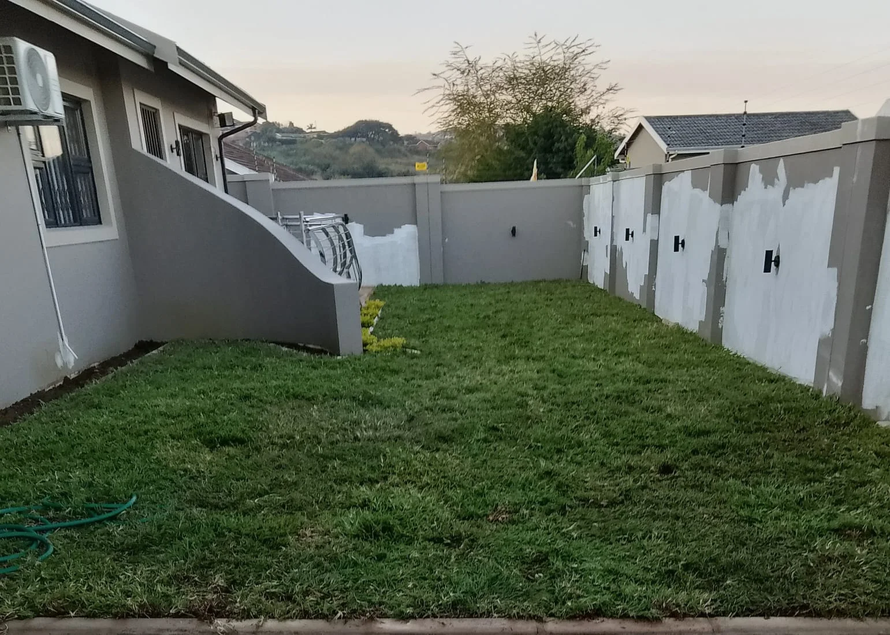
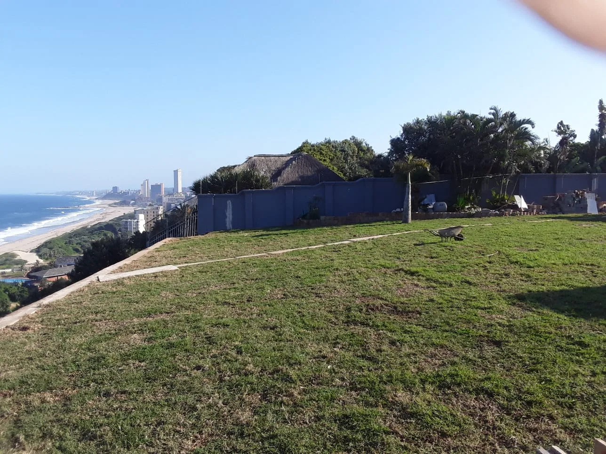
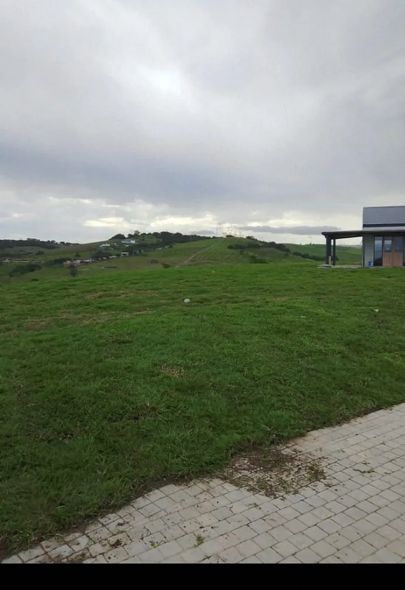
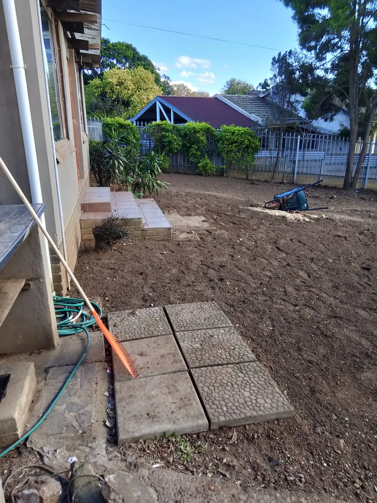
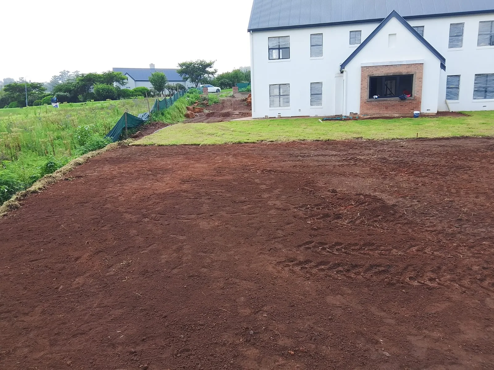
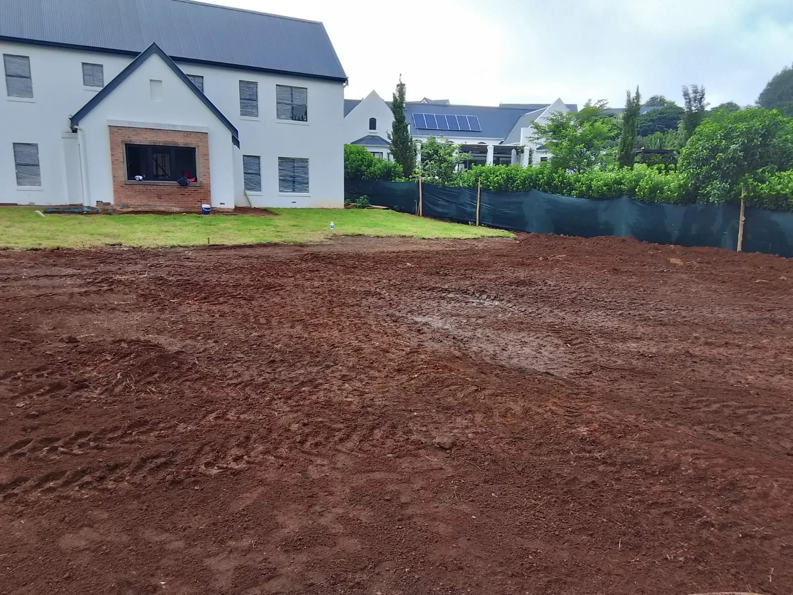
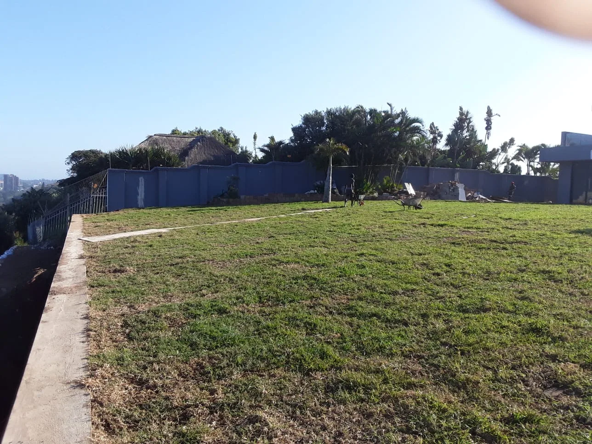
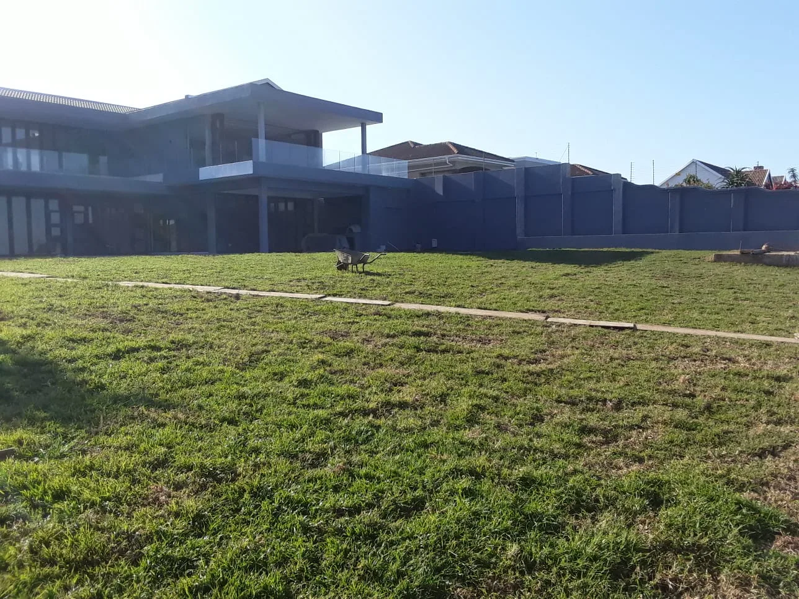

Our work speaks green
Real gardens.
Real transformations.
From the first levelled patch of soil to the final neat edge, every lawn is an opportunity to change how a space feels.

Project gallery
A little greener, one space at a time.
Select a photo to view it larger. Filter the gallery to see finished lawns or preparation work.


Courtyard lawn
Finished lawn · Instant turf
Poolside garden
Finished lawn · Detailed fitting

Estate lawn
Finished lawn · Large space

Evening lawn
Finished lawn · Garden path


Coastal property
Finished lawn · Sloped space


Open lawn
Finished lawn · Outdoor living

Ground preparation
Preparation · Soil levelling

Soil levelling
Preparation · A strong foundation


Site clearing
Preparation · Clearing old growth


Levelled ground
Preparation · Ready for turf


Ready for green
Preparation · Final surface


Lawn detail
Finished lawn · Paths & boundaries
Your space could be next
From where it is to where it could be.
Every outdoor space is different. Share a photo, your approximate measurements and your location to start planning your lawn.
Plan my lawn
Bring your garden to life
Ready to see green outside your door?
Let’s discuss natural instant turf for your outdoor space.